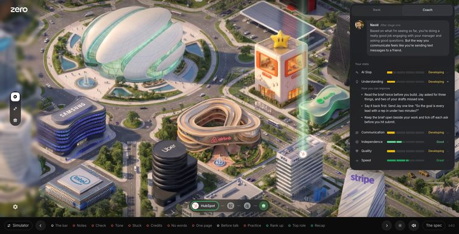
Stat tips line up with the stat
Open a stat and its tips start on the name’s line. The icon column stays clear.
Navid beside your work in scenario one, and the Rank panel he points to. The newest build is on top, and every build keeps its own link, its picture and its spec.
Your rank and XP, then the next rank: what it opens, what is different about those jobs, and the roles waiting. Every rank after it, the same but less. The b40 panel is one setting away.

Open a stat and its tips start on the name’s line. The icon column stays clear.
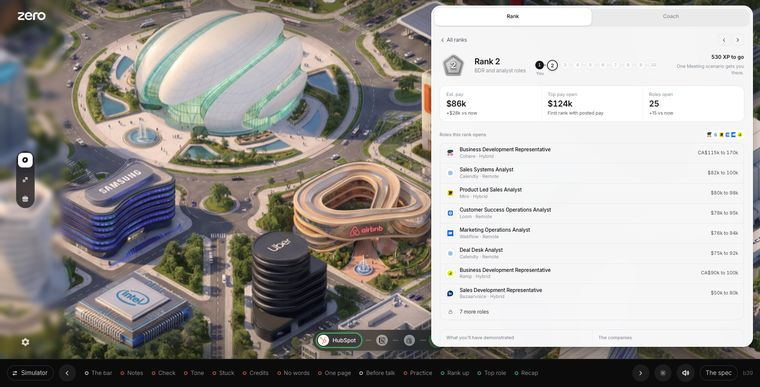
Logos sit dead centre. The big rank header shows the climb, 1 to 10. The open tabs are words only.
Each tab of the panel keeps its own mode.
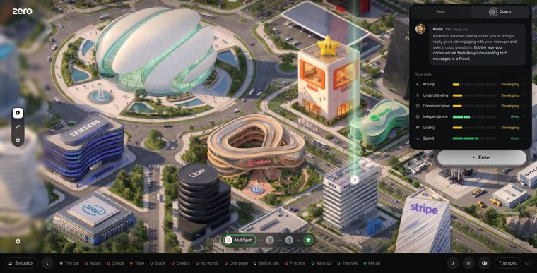
Navid’s read arrives as a bubble. Four box stats that shimmer while calibrating. An outlined rank view, no “teams hire for”.
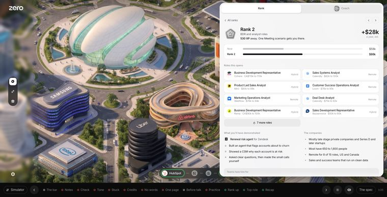
The founder’s cut: his summary and the stats, nothing else. Nadeem’s rank view: the pay jump, real roles, the scenario, the companies.
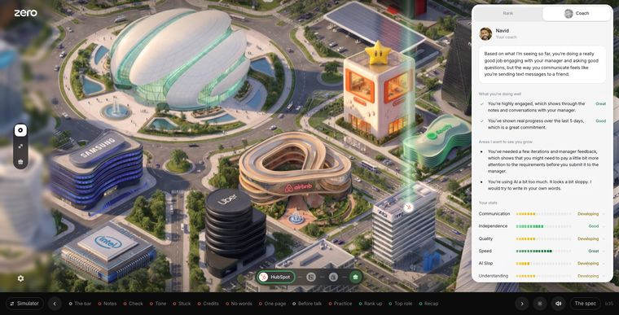
Stat rows are the name, the meter and the level.
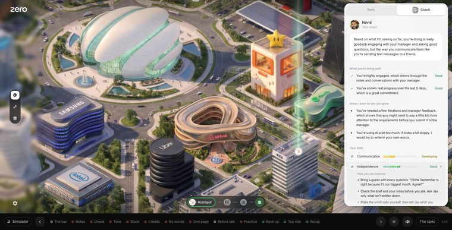
The Simulator gets a Stats tab. Every stat has three points for each level. Ranks say what they take.
His read word for word, six stats on a yellow to indigo scale, tap a stat for three fixes.
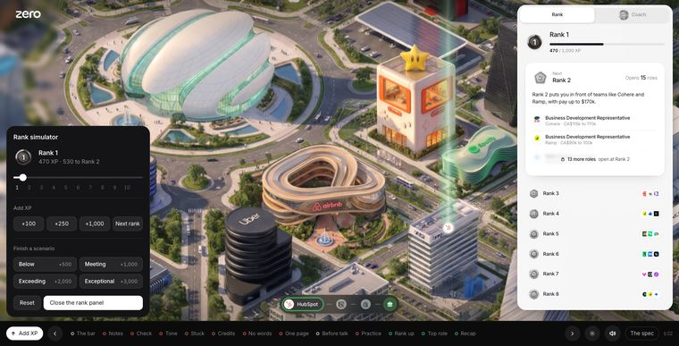
Add XP and watch ranks land. Thirteen of his lines rewritten as questions.
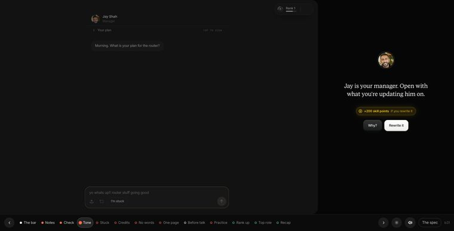
No nitty gritty. He leaves before you fix it. Credits, before the talk, a top role.
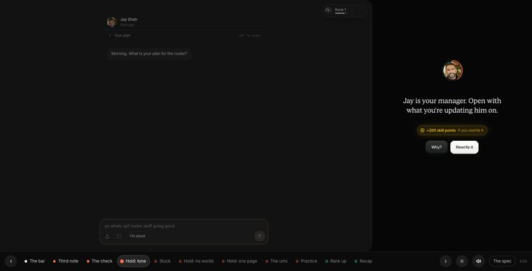
The white voice ring behind his face is gone.
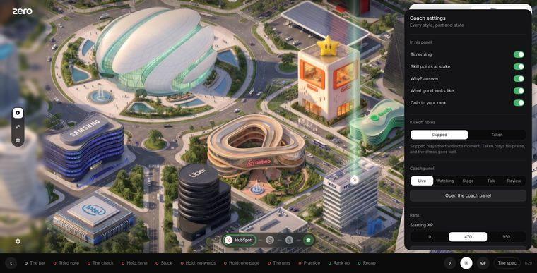
Previous and next around the points, and a gear for every coach style, part and state.
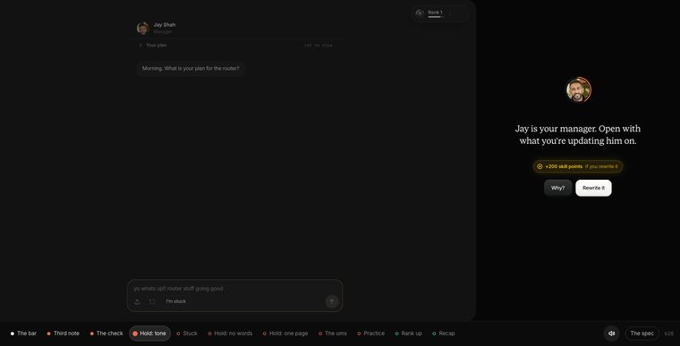
Nothing behind him can be touched. The third note writes itself.
Logos only in the rank rows. An opened rank reads like the next one.
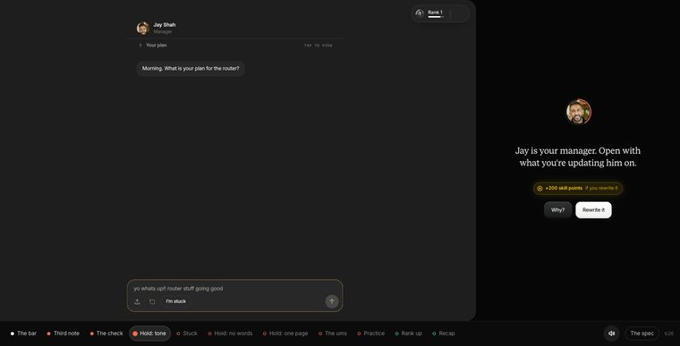
The bar is the only trigger, and it stops still after each moment.
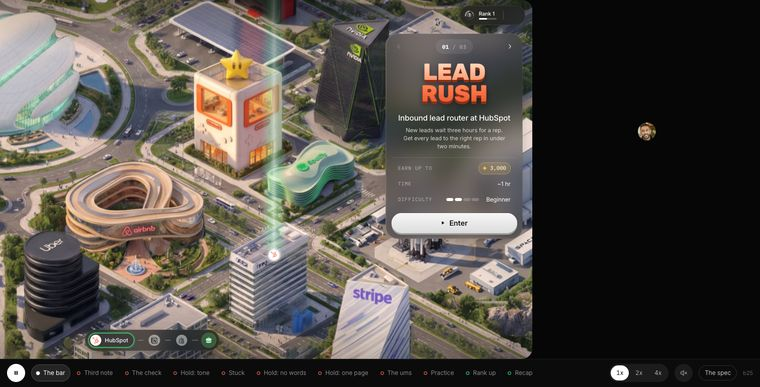
The coach back in the pill, stats on a calibration meter, the rank panel at 470 / 1,000.
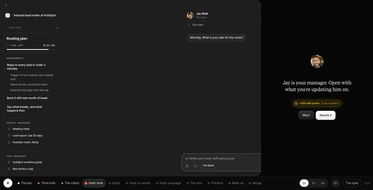
Tap Why? and his timer fills back up, then runs over his answer.
No name under his face, and the rank shows once.
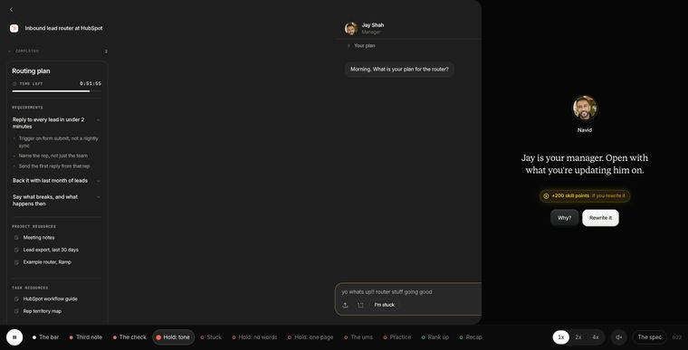
No overlay. He sits behind the app, and the app masks away from the right.
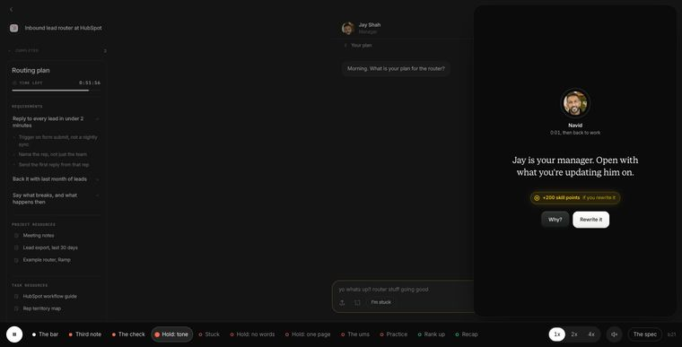
He comes in on his own. Rank rows show only what matters.
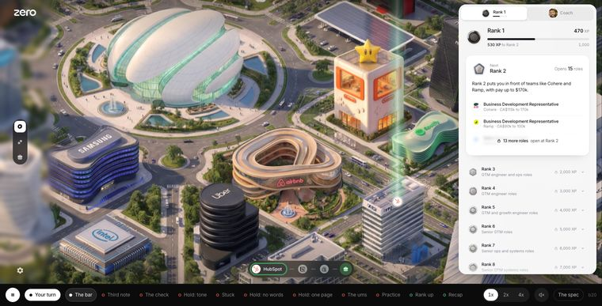
The pill is the rank and a bar. Cleaner rank cards.
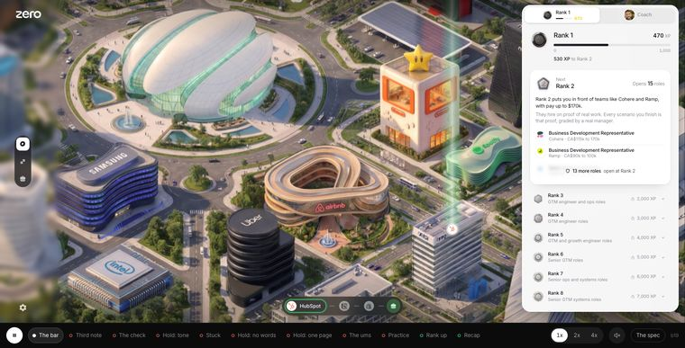
Sanjay starts at 470 XP, 530 to Rank 2.
The badge, Rank 1, the bar, one line. Total XP on the right.
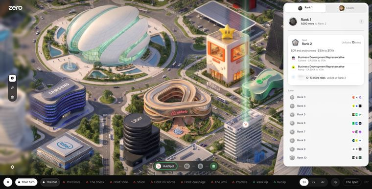
The goal card is gone and the whole app sits 20% smaller.
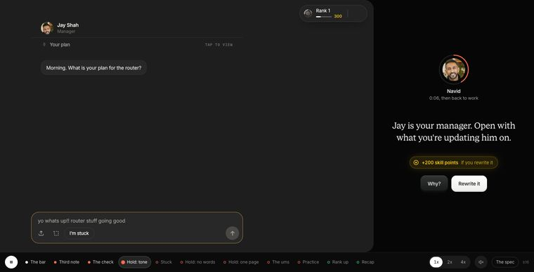
No cursor. The real kickoff, played by hand.
One flow, eleven moments, every fix worth skill points.
One scenario, and a slider of Navid’s moments.
He spots the pattern, then comes in during the work.
Jump straight to each moment. A speed switch.
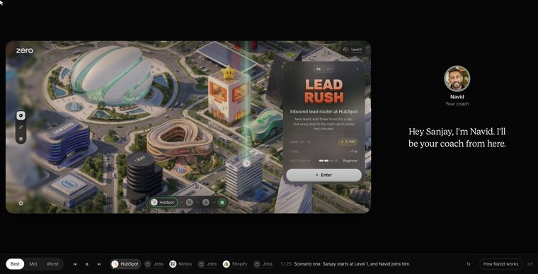
A side panel, in his own voice.
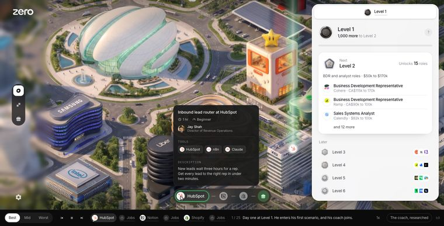
The level panel shows what is next.
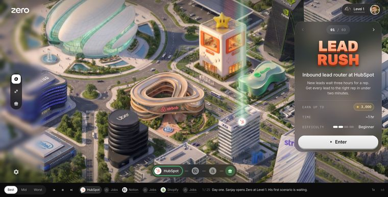
Sanjay from Level 1 through three scenarios, best, mid and worst.
The first passes: the three systems as separate sites, then the journey before Navid joined it.